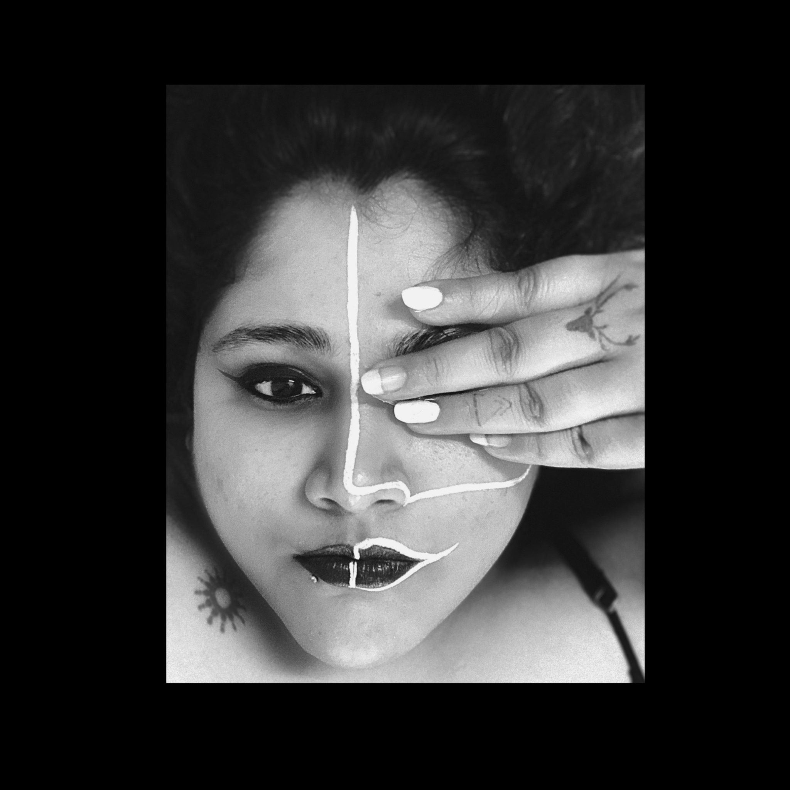
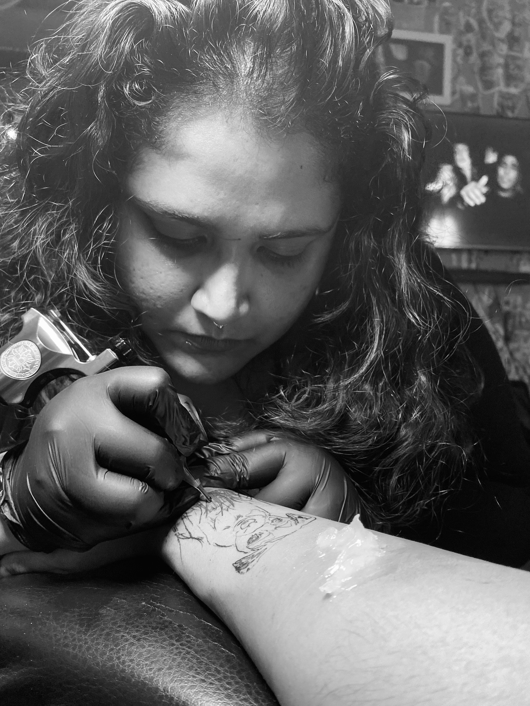
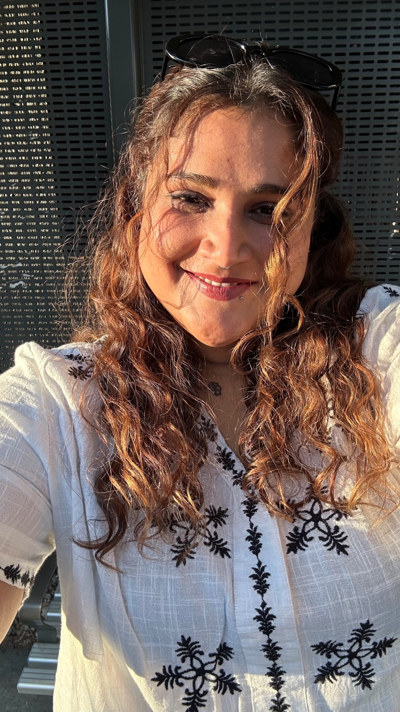

Sketching
Ideas are easier to understand once they're out of my head. I sketch constantly — interfaces, spaces, objects, whatever is in front of me.
My curiosity has never belonged to just one discipline. Architecture came first. Teaching came next. Somewhere along the way, I realised I was most interested in understanding how people move, think and make sense of things.

Four years across different disciplines, and I still find myself asking the same questions: Where does someone get stuck? What are they trying to do? What would make the next step feel easier?
Architecture taught me to think in systems, space and movement. Teaching taught me to listen and make complicated ideas feel possible. UX gave those instincts somewhere new to go.
Plans, sections, circulation, materials — learning to see the whole system before obsessing over one detail.
Teaching design and watching how people understand, question and solve problems became its own kind of research.
Researching, sketching and prototyping digital experiences with the same spatial curiosity I started with.

Tattooing started as a hobby, but it reminded me why I like design in the first place: make something, pay attention, adjust, try again. There is no hiding behind a perfect idea when the work has to exist in the real world.
That is probably why I care so much about the details in digital work — not because the pixel is precious, but because the person on the other side is.
There is always something new to learn, make, ruin, fix and try again.
Ideas are easier to understand once they're out of my head. I sketch constantly — interfaces, spaces, objects, whatever is in front of me.
Different materials, same satisfaction. I like the process of turning a vague idea into something you can actually see.
Currently learning pottery — mostly learning that clay has absolutely no interest in following my plans. I love it.
I don't think being a designer means having one fixed way of thinking. For me, it means staying curious enough to notice the problem, empathetic enough to understand it, and stubborn enough to keep working until it makes sense.
